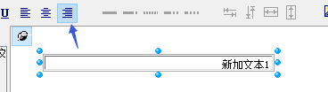

【非常见问题杂笔记】超文本条码不显示，一款AO打印机等
1.插件 打印的 数据 到343之后 条码 就丢失了？1.看上去条码的位置比较固定，用样例11的方式输出试试，参考样例11 http://www.c-lodop.com/demolist/PrintSample11.html
2.条码在超文本中是否是图片输出的，单独输出该条码图片测试下，参考样例8.
条码是图片输出的吗，这种标签尽量用纯文本方式。
快递单，小票，标签，票据等，建议用ADD_PRINT_TEXT等纯文本和画线等进行设计，不受浏览器解析的影响。
如果条码是图片，或用base64方式输出试试，lodop语句直接输出base64码，不带img标签，参考样例38
http://www.c-lodop.com/demolist/PrintSample38.html
拆分下任务试试，一个任务打少量标签。
批量打印，分页分任务，在页数和任务之间平衡一下，参考样例26，http://www.c-lodop.com/demolist/PrintSample26.html
尽量不用svg条码
Lodop是基于本机windows底层引擎进行渲染解析的，与ie调用的引擎一致。
有的浏览器引擎不支持svg，或大量打印出问题等。
可以尝试换用图片方式，参考样例8,38.
或lodop语句输出条码，参考样例11
分成多任务测试下，一个任务打印少量的标签。
2.购买注册号在PC客户端安装的话，有个数限制吗？
三种角色及使用方法：
参考http://www.c-lodop.com/demolist/t1.html
第一种角色，客户端没有限制。
如果是ip或域名注册，只要访问的是注册的ip或域名就行。
lodop 注册码对c-lodop第一种客户端本地打印角色默认有效，无客户端限制。
控件注册号 注意事项 最新价格表、购买方式和使用方法见(官网)：
http://www.c-lodop.com/Lodop_Lic.html
如果是需要pdf打印等，需要顶级注册
3.顶域注册的话 是不是 向上兼容？
是指后续版本吗，注册号对后续版本都有效。
对子域名有效。ip访问时无效。
IP和域名注册，根据浏览器地址栏访问方式注册，P访问，注册IP；域名访问，注册域名；不限IP域名，可做企业名称注册。
（1）.单独注册服务器ip地址，登陆访问方式是ip地址访问，例如：注册ip地址：192.168.0.1，登陆方式如下
http：//192.168.0.1:8000/index.jsp等，域名访问时，注册信息无效。
（2）.单独注册域名：登陆访问方式是域名地址访问，例如：注册域名： www.c-lodop.com 登陆方式如下：http://www.c-lodop.com/index.html等，ip地址访问时，注册信息无效
前面有大类，ip访问注册ip，域名访问注册域名。
只要访问的是注册的域名就行。
域名的ip不限制，只要是这个域名就行。
提示安装和注册无关，
测试官网样例http://www.c-lodop.com/demolist/PrintSample2.html
如果样例正常，样例页面右键查看源码 ，参考样例的使用方法。
4.远程打印的时候那个打印窗口怎么触发打印完成关闭呢？
试下样例16的预览打印后自动关闭方法，这是客户端本地打印角色的，远程打印不一定支持，实际测试下
http://www.c-lodop.com/demolist/PrintSample16.html
（这个自己没试过，可以之后找时间自己试试）
5.打印出的条码有锯齿
打印项是什么语句输出的，是图片，还是样例11的方式。
用样例11的方式lodop语句输出条码试试。
6.c-lodop还需要实时更新吗，如果我正式应用到生产中，我每台客户端都需要更新C-lodop吗？
不需要实时更新，可根据需要自己控制提示升级，参考lodopFuncs.js里的判断，里面已经写好的提示，有提示下载安装，和提示升级的方法，可提示客户端下载安装。
lodopFuncs.js在下载中心发行包里，http://www.c-lodop.com/download.html
不受影响，如果有需要，也可以提示客户端升级，提示升级的部分在lodopFuncs.js里。
如果之前只用了lodop方式，升级到c-lodop后，参考http://www.c-lodop.com/faq/pp7.html
7.提示，the secode incorrect!
预览窗口是否过小，直接用原始的预览窗口测试下。
预览窗口太小，用不加参数和不加控制窗口大小样式的的原始预览窗口大小测试下LODOP.PREVIEW();
访问下http://[C-Lodop服务所在主机ip或域名]:[C-Lodop端口]欢迎页面试试
点欢迎页面的预览试试
这个是窗口太小导致的，排查是否有控制窗口大小的语句
访问下http://[C-Lodop服务所在主机ip或域名]:[C-Lodop端口]欢迎页面试试
点欢迎页面的预览试试。
是屏蔽了欢迎页面吗
http://[C-Lodop服务所在主机ip或域名]:[C-Lodop端口]
如果没有屏蔽欢迎页面，这个地址是可以访问的，点这个页面原始的预览测试下。
如果欢迎页面正常，对照样例代码排查下，不要设置预览窗口大小相关的样式语句。
用默认的预览窗口大小。
这个窗口看起来被控制大小了，对照欢迎页面排查代码。
做个简单例子测试下，或直接用欢迎页面的
可以直接输出个text文本测试下。
LODOP.PRINT_INITA(1,1,770,660,"测试预览功能");
LODOP.ADD_PRINT_TEXT(10,60,300,200,"这是测试的纯文本，下面是超文本:");
LODOP.PREVIEW();
欢迎页面预览是正常的，说明是正常的 。
用欢迎页面的简单例子对照代码测试排查下。
用的版本是多少，用4014测试下。
用原始的预览窗口默认大小测试下。
欢迎页面的简单代码可以正常预览窗口，一定和的代码一些地方有关。
可以通过对比欢迎页面做简单例子逐步排查下。
8.购买的价格970之后，开发票单算钱吗？
带着电子发票，留开票抬头和税号，会发电子普通发票到邮箱里。970是带发票的价格。
9.打印机可以设置停歇点嘛？
没有相关的方法控制停歇点。咨询下打印机客服关于停歇点的控制试试。
10.文本可以右对齐吗
可以，

LODOP.ADD_PRINT_TEXT(31,36,260,20,"新加文本1");
LODOP.SET_PRINT_STYLEA(0,"Alignment",3);
11.vue中样式加不上去
参考http://www.c-lodop.com/faq/pp35.html
加载css样式，参考样例10 http://www.c-lodop.com/demolist/PrintSample10.html
查看传入的样式，查看lodop内部解析的html信息，见http://www.c-lodop.com/faq/pp8.html
12.云打印是安装在客户端吗？
第一种角色是安装在客户端，每个客户端都安装
参考http://www.c-lodop.com/demolist/t1.html
参考链接里的三种场景，是哪种角色。
如果是客户端本地打印角色，每个客户端都安装，服务器端不安装，服务器引用lodopFuncs.js，提示客户端下载安装。
13. 有没有一个接入lodop的流程图呢，比如 第一步，现在exe软件，并安装，第二部，在js里面写代码
1）在官网下载中心 下载综合安装包
（2）安装 CLodop_Setup_for_Win32NT.exe（安装 兼容32位和64位操作系统）
install_lodop32.exe（安装 浏览器位数是32位）
install_lodop64.exe（64位操作系统中如果有64位浏览器，需要安装）
（3）在页面引用安装包里的 LodopFuncs.js
该LodopFuncs.js里有自动判断哪些浏览器使用Lodop，哪些浏览器使用C-Lodop的方法。
（4）使用Lodop，具体使用方法参考官网样例（官网样例页面 右键-查看源码）
方法外 var LODOP; //声明为全局变量
在每个需要打印的地方：LODOP=getLodop(); //获得Lodop对象，getLodop()该方法在LodopFuncs.js里。
最基本的打印过程至少有初始化语句、添内容语句和打印语句三部分组成，例如：
LODOP.PRINT_INIT("打印任务名"); //首先一个初始化语句
LODOP.ADD_PRINT_TEXT(0,0,100,20,"文本内容一");//然后多个ADD语句及SET语句
LODOP.PRINT(); //最后一个打印(或预览、维护、设计)语句
14.打印规格怎么以cm为单位
使用各种长度单位 参考http://www.c-lodop.com/demolist/PrintSample29.html
15. 打印的变成 .oxps后缀的
选择打印机，参考样例5、7
http://www.c-lodop.com/demolist/PrintSample5.html
http://www.c-lodop.com/demolist/PrintSample7.html
打印机优先级，参考http://www.c-lodop.com/blogs/Blog002.html
打印机不同，一个是xps虚拟打印机，一个是pdf虚拟打印机。
在预览的设置查看下当前使用的打印机，打印成pdf的应该是pdf虚拟打印机。
查看下windows打印机列表，有的自带。
有pdf虚拟打印机存在，如果想打印成xps，可以在代码指定选择xps虚拟打印机。
http://www.c-lodop.com/demolist/PrintSample7.html
打印成pdf文件的，打印机名称里带pdf字样的。
16.设置纵向打印，纸张 就变成了了 148 x 210
纸张设置，参考样例5 http://www.c-lodop.com/demolist/PrintSample5.html
用xps或pdf虚拟打印机测试一下（测试可用样例5），如果虚拟打印机输出的是正确的纸张，真实打印机不是，可能是打印机不支持该自定义纸张。 选择该真实打印机，在打印预览下方状态栏查看一下纸张大小，有的打印机不支持该自定义纸张。
正常情况下的纸张，一般都类似A4这样，宽度窄高度高的细长状的，扁平状的也可以，但是如果扁平状+内容横向，可能会干扰打印机或虚拟打印机的一些识别，造成一些问题。
需要实际测试，用打印机能正常显示，支持的纸张。
用虚拟打印机测试下。
如果虚拟打印机也有问题，发一下纸张语句，这边测试下。
参数是这个参数吗，2100 ，1480
参数是这个参数吗，2100 ，1480
用xps或pdf虚拟打印机测试下，
win7以后系统自带Microsoft XPS Document Writer虚拟打印机或者 下载安装群文件里的Doro PDF Writer虚拟打印机
这边用xps虚拟打印机测试，两个预览都是正常的。
理论上本机虚拟打印没问题的话，说明插件代码没问题，程序可做的努力就的确很少了，毕竟windows下的打印是微软倡导的设备无关系原则，要在打印机和打印驱动程序 系统上排查下，尝试重装驱动 或者 打印机不支持一些功能
理论上本机虚拟打印没问题的话，说明插件代码没问题，程序可做的努力就的确很少了，毕竟windows下的打印是微软倡导的设备无关系原则，要在打印机和打印驱动程序 系统上排查下，尝试重装驱动 或者 打印机不支持一些功能
打印机不支持那种纸张。
xps虚拟打印正常，和打印机有关。
其他打印机或虚拟打印机不支持。
只能用该打印机支持的纸张。
打印机不支持，换纸张。
这种扁平的纸张有些虚拟打印机也不支持，只能用该打印机支持的纸张。
和打印机有关，lodop设置不了。
实际测试不支持，就是不支持的，xps虚拟打印机是支持的，说明和打印机有关。
换支持的打印机，或者一张A4打上下两半内容，再裁剪纸张。
17.有3台电脑用，有优化的吗
三种角色及使用方法：
参考http://www.c-lodop.com/demolist/t1.html
客户端本地打印角色，在客户端本地启动调用本地的打印机，不会互相影响。
优化性能批量打印，参考
批量打印，分页分任务，在页数和任务之间平衡一下，参考样例26，http://www.c-lodop.com/demolist/PrintSample26.html
18.打出来后面多一张白纸
直接打印先改成预览，进入打印预览查看下效果
（设置windows默认的打印机）这句替换成指定打印机语句，参考样例7
top值是10%，宽高打印项是100%，100%是相对纸张的。
设置合适的打印项高度，超过打印项高度或纸张高度会自动分页。
给传入的整个超文本添加背景色，看输出的空白页中是否有背景色，有说明不可见内容。
也可能是有不可见内容在超文本内，占了高度。
查看lodop内部解析的html信息，见http://www.c-lodop.com/faq/pp8.html
发一下这个超文本，这边测试下。
这边测试没有分页，再发一下打印项语句和参数 ，这边用的是LODOP.ADD_PRINT_HTM(0,0,"100%","100%"
去掉里面的margin和margin-top测试下。直接定位打印项。用lodop打印项的语句设置纸张中的位置
查看lodop内部解析的html信息，见http://www.c-lodop.com/faq/pp8.html
分析差异点，因浏览器版本不同遵循的html标准不同，造成某些标签属性显示有差异，尽量避免使用有差异的属性，可以在ie下不同版本仿真情况下验证差异 排查样式，尽量使用使用各浏览器无歧义的通用的 html css js，不支持的样式可尝试用其他样式代替。
查看lodop内部解析的html信息，见http://www.c-lodop.com/faq/pp8.html
通过删减内容，或做简单例子的方式，找到出问题的html或样式，定位到哪些html或样式引起的。
前面加个<!DOCTYPE html>就好了
Lodop是基于本机windows底层引擎进行渲染解析的，与ie调用的引擎一致。
可能是本机引擎解析时不加这个出了问题。
18. 批量打印，有时出现不打印的现象
是批量打印漏打吗，1.用最新版http://www.c-lodop.com/download.html
2.参考样例4http://www.c-lodop.com/demolist/PrintSample4.html
直接判断print的返回值，判断是否加入了队列。
还是打印一段时间，不打印了，不打印时有什么现象。
是批量打印，中间漏任务吗
还是打着打着，之后不能打印了
不打的时候，访问下http://localhost:8000/c_sysmessage，查看本机c-lodop的出错信息
批量打印，分页分任务，在页数和任务之间平衡一下，参考样例
26，http://www.c-lodop.com/demolist/PrintSample26.html
中间漏任务吗，
1.用最新版http://www.c-lodop.com/download.html
2.参考样例4http://www.c-lodop.com/demolist/PrintSample4.html
直接判断print的返回值，判断是否加入了队列。
19.Lodop 能加标题进行 缓存吗，就是加文本维护缓存
需要实现什么效果，是针对不同客户端进行微调吗 。
打印维护功能，参考http://www.c-lodop.com/demolist/PrintSample21.html
不支持，只能自己JS里控制，或自己处理保存信息字符串。
20.用LODOP.PRINT()直接打印，会频繁出现打印2张，3张相同的内容。 用LODOP.PRINT_DESIGN();打印预览窗口里的预览，再打印一直都是出一张纸。
用虚拟打印机输出测试下。
用xps或pdf虚拟打印机测试下，
win7以后系统自带Microsoft XPS Document Writer虚拟打印机或者 下载安装群文件里的Doro PDF Writer虚拟打印机
并查看输出的文件下方是否有水印输出。
预览和直接打印如果代码一致，可能是注册号无效的水印引起的。参考排查一下http://www.c-lodop.com/faq/ph01.html
是2,3张相同的内容吗，可能和默认份数有关，参考样例7，强制设置为一份试试。
并调试JS，排查是否执行了正确个数的print语句
调试JS，排查是否执行了正确个数的print语句。
断点调试下试试。
print没有界面，如果是点击打印，有可能会多次点击造成多打，断点调试JS，排查语句执行是否是一次。
21.注册，是通过界面注册还是代码？
三种角色及使用方法：
参考http://www.c-lodop.com/demolist/t1.html
第一种角色是一个JS语句，代码注册。
目前lodop和c-lodop只能安装到windows操作系统上，下载中心还有linux版，除windows和linux，其他操作系统无法安装，无法用客户端本地打印角色，其他操作系统可以用集中打印，或广域网打印角色，打印到其他windows电脑上。
三种角色及使用方法 参考http://www.c-lodop.com/demolist/t1.html
不支持centos系统。
域名注册方法适合第一种角色，客户端本地打印的，每个客户端都需要安装。
需要客户端是windows操作系统。
22.打印能针对次页开始的页面以及最后一页设置样式么
参考http://www.c-lodop.com/demolist/PrintSample25.html
可以指定打印项到哪页输出。
也可以禁止输出到第一页，后面的页数输出某个内容。
设置某页的某个内容的样式，可以自己控制。
是纸张的长度吗，还是自动分页的打印项的高度。
如果是自动分页的的打印项。
参考样例39 http://www.c-lodop.com/demolist/PrintSample39.html
LODOP.SET_PRINT_STYLEA(0,"Offset2Top",-140);//设置次页向上偏移140
次页表格top值偏移，设置。
负值是向上偏移，正值是向下偏移。
参考技术手册：“Offset2Top”：次页开始的上边距偏移量，“Offset2Left”：次页开始的左边距偏移量
是一个打印项的自动分页吗，每页都会按照打印项高度自动分页，每页的分页高度是固定的。
或参考样例30，拆分内容，手动分页，可自己控制每页的内容和高度。
拆分成多个打印项，一页一个的打印项，每页的打印项可以自己控制自己的打印项高度
23.pdf 文件可以直接打印吗
官网下载中心，下载最新的C-lodop
http://www.c-lodop.com/download.html
安装后在欢迎页面末尾找“PDF打印”链接，或输入地址:
http://localhost:8000/c_pdfprint
控件注册号 注意事项 最新价格表、购买方式和使用方法见(官网)：
http://www.c-lodop.com/Lodop_Lic.html
pdf打印去掉这个弹窗，需要顶级注册。域名顶级或公司名顶级。
控件注册号 注意事项 最新价格表、购买方式和使用方法见(官网)：
http://www.c-lodop.com/Lodop_Lic.html
域名顶级，和公司名顶级都可以，可参考价格表。
24.css字体设置无效，设置的雅黑什么的不起作用
加载css样式，参考样例10 http://www.c-lodop.com/demolist/PrintSample10.html
发一下那部分的html，设置的字体名称是否正确。
本机是否安装了这个字体。
查看lodop内部解析的html信息，见http://www.c-lodop.com/faq/pp8.html
font-family: Microsoft YaHei;，换成字体的中文名试试。
微软雅黑，用这个中文名称试试。
发一下这个字体的名称，在样例3里测试下试试
修改字体，在预览查看预览是否正常。
25.分页打的时候可不可以每打一页都暂停一次，类似手动翻页那
手动双面打印，参考http://www.c-lodop.com/demolist/PrintSample6.html
可以设置多任务试试，参考样例26
http://www.c-lodop.com/demolist/PrintSample26.html
26.页面有3.4页A4纸 那么长 有点电脑可以展示全 有的电脑只能展示一页
用xps或pdf虚拟打印机测试下，
win7以后系统自带Microsoft XPS Document Writer虚拟打印机或者 下载安装群文件里的Doro PDF Writer虚拟打印机
纸张是怎样设置的，如果是设置的纸张不定高，不是所有打印机都支持，有的打印机不支持该纸张。
纸张设置，参考样例5 http://www.c-lodop.com/demolist/PrintSample5.html
用xps或pdf虚拟打印机测试一下（测试可用样例5），如果虚拟打印机输出的是正确的纸张，真实打印机不是，可能是打印机不支持该自定义纸张。 选择该真实打印机，在打印预览下方状态栏查看一下纸张大小，有的打印机不支持该自定义纸张。
pdf虚拟打印机也有最大纸张高度限制，发一下纸张语句，这边测试下。
是内容没有自动分页吗，查看lodop内部解析的html信息，见http://www.c-lodop.com/faq/pp8.html
排查是否和样式有关
看lodop内部解析的html信息，见http://www.c-lodop.com/faq/pp8.html
发一下打印设计右键属性里拷出来的内容，这边测试下。
27.出纸不正常是为什么呢？
用xps或pdf虚拟打印机测试下，
win7以后系统自带Microsoft XPS Document Writer虚拟打印机或者 下载安装群文件里的Doro PDF Writer虚拟打印机
用虚拟打印机测试下，真实打印机预览查看下。
查看真实打印机下方状态栏的纸张，会按照那个纸张走纸，有的打印机不支持自定义纸张，可能和定义的纸张不同。
28.装了第一个clodop的，install_lodop64还要装吗
测试参考一下官网样例http://www.c-lodop.com/LodopDemo.html
官网样例是混合部署LodopFuncs.js里已经写好了判断。
客户端是浏览器支持np插件，是32位浏览器，就会提示下载32位的Lodop插件：install_lodop32.exe
客户端浏览器支持np插件，是64位浏览器，就会提示下载64位的Lodop插件：install_lodop64.exe
客户端浏览器不支持np插件（判断如高版本谷歌火狐等），会提示下载C-Lodop方式： CLodop_Setup_for_Win32NT.exe
样例是混合部署，如果想只用c-lodop，参考http://www.c-lodop.com/faq/pp34.html
29.把打印封装了，引用不到本机js
是BS架构的吗，这个是普通的JS文件，里面写好了一些方法。
可以直接在页面引用。
调试JS，查看报错信息
这个是自己的提示吗，
测试官网样例http://www.c-lodop.com/demolist/PrintSample2.html
参考样例的用法。
对照官网样例排查下。
调试JS，查看网页里的JS报错信息。
参考http://www.c-lodop.com/faq/pp23.html
该方法在http://localhost:8000/CLodopFuncs.js里，lodopFucs.js里判断为c-lodop动态引用了。
三种角色及使用方法：
参考http://www.c-lodop.com/demolist/t1.html
客户端本地打印角色不需要修改，直接是默认的localhost。
那个object是插件方式的，样例2，右键，参考样例2源码的写法。
直接样例的使用方法就可以了。
30.购买了注册 打印看不到效果呢
直接复制收注册号邮箱里的所有语句。
私发一下注册语句，这边测试下。
这边测试是正常的，直接放到打印方法里测试下。（图示）
这个就是状态栏。
这个是授权的标志。具体打印内容可以自己控制。
注册可以去掉直接打印的水印，用print或printa输出后，纸张上没有lodop的水印。
预览打印无水印，直接打印会有lodop试用版水印在纸张下方输出。
31.通过vpn访问的客户端去加载这个js的时候路径不对
vpn访问方式不了解，是否是在客户端本地安装，http://localhost:8000/CLodopFuncs.js这个地址是否能正常访问
32.viP群通过下
没有看到申请消息，再加一下试试，vip群号，参考http://www.c-lodop.com/about.html
33.一次打印套打两页纸 并且两页的背景图不一样 如何实现呢 我现在这么些只打第二页的
写法不对，任务内分页，参考样例30
初始化到打印是一个任务。
这个lodop背景图一个任务只能设置一个，可以用多任务方式，参考样例26.
把newpage那个地方也换成print语句。两个任务输出，每个任务是各自的背景图。
不支持，预览只能是一个任务的。
或参考样例37，换用普通图片输出方式，不用LODOP的这背景图。
选中图片打印项，右键属性里可以设置只预览不打印，生成代码。
可以设置打印项只预览不打印。
图片打印项在下层，上层可以用text文本。
先输出的打印项在下层，后输出的在上层，可以先输出图片打印项，再输出text打印项
LODOP.ADD_PRINT_IMAGE(10,10,300,160,"(图像1的超文本路径)");
LODOP.SET_PRINT_STYLEA(0,"PreviewOnly",1);
LODOP.ADD_PRINT_IMAGE这个一个任务可以输出多个。
在任务内分页，参考样例30
LODOP.ADD_PRINT_IMAGE(10,10,300,250,"<img src=\"http://www.c-lodop.com/demolist/PrintSample8.jpg\"/>");
LODOP.NewPage();
LODOP.ADD_PRINT_IMAGE(10,10,300,250,"<img src=\"http://www.c-lodop.com/demolist/PrintSample37.png\"/>");
（虽然不是自己负责的群，但是因为在群里问了加vip群的事，回复了下，看的之前是自己回复的，所以误以为这个也是自己的群，既然已经开始回复了，就简单继续回复吧，因为以自己负责的群为主，这问题以后总结成常见问答，回复会更方便，不用打字截图等。）
34.CLODOPA这个变量名会变吗
参考http://localhost:8000/
当有多个引用时，用name设置新变量名来区分调用
如果都是客户端本地打印角色，
可以直接用默认的名字，具体可参考c-lodop技术手册的介绍http://www.c-lodop.com/download.html
CLODOPA2015_7028，http://localhost:8000/CLodopfuncs.js固定的，可参考http://localhost:8000/CLodopfuncs.js
35.打印设计正常，预览和打印出来就不对了
打印项是什么语句输出的，是add_print_text纯文本，还是add_print_htm超文本
查看lodop内部解析的html信息，见http://www.c-lodop.com/faq/pp8.html
分析差异点，因浏览器版本不同遵循的html标准不同，造成某些标签属性显示有差异，尽量避免使用有差异的属性，可以在ie下不同版本仿真情况下验证差异 排查样式，尽量使用使用各浏览器无歧义的通用的 html css js，不支持的样式可尝试用其他样式代替。
排查样式，并排查代码是否用来垂直缩放等样式。
用ADD_PRINT_TEXT语句输出试试
测试下样例2，样例2如果正常，排查样式和代码。
http://www.c-lodop.com/demolist/PrintSample2.html
样例2正常，可能和自己的html或一些样式有关，也可能一些样式受容器的影响等。
查看lodop内部解析的html信息，见http://www.c-lodop.com/faq/pp8.html
通过删减内容，或做简单例子的方式，找到出问题的html或样式，定位到哪些html或样式引起的。
36.批量打印图片 打印 六七十份后 就变空白了
批量打印大量图片，用base64方式输出试试，lodop语句直接输出base64码，不带img标签，参考样例38
http://www.c-lodop.com/demolist/PrintSample38.html
是不加img标签那种吗，那种不经过浏览器解析。
单独输出后面的base64图片试试，后面的base64传入是否正常，是否是base64图片比较大 。
参考样例26，多分些任务试试。
图片比较大，可能批量打印大量图片的原因。
尽量用纯文本和超文本进行内容设计，或多分一些任务，参考样例26，每个任务输出少量图片试试。
再出现为空的时候，重启下c-lodop试试。
参考http://www.c-lodop.com/faq/pp4.html
如在Lodopfuncs.js里用JS语句重启的话，可如下：
if (CLodopIsLocal)
window.location.href="CLodop.protocol:setup";
或c-lodop本身的定时重启
在c-lodop启动界面端口界面的右键里。
可以实际下，一般都会成功。
37.lodop支持国产的操作系统么
参考http://www.c-lodop.com/download.html
linux桌面版，在下载中心其他版本里
38.一次打印，同一个布局的东西，总是分开两次出来，第二次就这边一行数据
该真实打印机进入打印预览查看下效果，是否自动分页了。
预览是打印机的反显，用该有问题的打印机预览查看下效果。
可以用xps或虚拟打印机测试下。
理论上本机虚拟打印没问题的话，说明插件代码没问题，程序可做的努力就的确很少了，毕竟windows下的打印是微软倡导的设备无关系原则，要在打印机和打印驱动程序 系统上排查下，尝试重装驱动 或者 打印机不支持一些功能，或打印机不支持自定义纸张等。
39.读写端口提示ReadPortData:File access denied
参考样例和lodop技术手册，排查端口和参数等是否正常，可以先用端口测试工具调试测试下。
是否注册付费没有关系。结合端口技术资料联合排查
40.打印界面过几天会变是为什么呢，变得没有设置比例和方向那种了
c-lodop预览模式，参考http://www.c-lodop.com/faq/pp28.html
双击桌面上的c-lodop快捷方式，重启一下本机的c-lodop，重启c-lodop后刷新页面。
并使用最新版c-lodop，以管理员权限安装最新版试试： http://www.c-lodop.com/download.html
c-lodop预览模式，参考http://www.c-lodop.com/faq/pp28.html
本机的但是windows的另外一个用户启动的，或者尽管是本用户安装的，但因为云进程因故被杀死，“免登录服务”会启动一个系统级的云进程，此时也表现为“远程模式”。
确保本地c-lodop正常启动，以管理员权限重新安装c-lodop试试。
并参考参考http://www.c-lodop.com/faq/pp5.html
c-lodop预览模式，参考http://www.c-lodop.com/faq/pp28.html
双击桌面上的c-lodop快捷方式，重启一下本机的c-lodop，重启c-lodop后刷新页面。
不用重装，重启c-lodop也可以。
再出问题时，
访问下http://localhost:8000/c_sysmessage，查看本机c-lodop的出错信息
41.WebSocket connection to 'ws://127.0.0.1:8000/c_webskt/' failed: Error in connection establishment: 要求要一次上传所有打印内容，然后再批量打印。按照上面的代码能符合客户要求。但是一次传入打印的数据超过50行 直接就不打印了
进入欢迎页面http://localhost:8000试试
进入欢迎页面http://localhost:8000试试
双击桌面上的c-lodop快捷方式，重启一下本机的c-lodop，重启c-lodop后刷新页面。右键，以管理员启动桌面上的c-lodop快捷方式试试。
如何实际测试和内容有关，批量打印，分页分任务，在页数和任务之间平衡一下，参考样例
26，http://www.c-lodop.com/demolist/PrintSample26.html
一个任务不要打印太多，多任务输出试试，不预览直接打印，批量打印，分页分任务，在页数和任务之间平衡一下，参考样例26，http://www.c-lodop.com/demolist/PrintSample26.html
41.lodop支持arm64 linux吗
参考http://www.c-lodop.com/download.html
linux版，在下载中心其他版本里
实际测试下，有的操作系统可能不支持
目前支持Linux系统(ubuntu、麒麟、深度)
用的是什么操作系统
参考http://www.c-lodop.com/download.html
最新版7019是64位的
用的版本是多少，用最新版7019测试下。
或升级下麒麟操作系统的版本试试。
用的麒麟操作系统的版本是多少。
直接在linux桌面双击lodop试试
麒麟操作系统的版本是多少。是否是较低的版本，低版本可能有些问题，升级最新版的麒麟操作系统测试下。
目前发布的这个7019是64位的。
操作系统的版本是多少，再发一下试试，这边公司测试的是银河麒麟版本 v10。
只要能安装到windows列表的打印机都可以，选择打印机，参考测试样例5,7http://www.c-lodop.com/demolist/PrintSample7.html
42.支持热敏打印机吗
只要能安装到windows列表的打印机都可以，选择打印机，参考测试样例5,7http://www.c-lodop.com/demolist/PrintSample7.html
43.推荐带AO功能的打印机
参考http://www.c-lodop.com/aoprint.html
三种角色及使用方法：
参考http://www.c-lodop.com/demolist/t1.html 如果是普通的打印机，可以用端桥模式，目前的AO打印机只有一种，参考标准模式里的。
如果是用端桥模式，可用普通打印机，只要是能安装到windows打印机列表的打印机都可以。
可以根据需要购买。
44.打印出来中文都只显示顶部，英文数字正常
用xps或pdf虚拟打印机测试下，
win7以后系统自带Microsoft XPS Document Writer虚拟打印机或者 下载安装群文件里的Doro PDF Writer虚拟打印机
打印项是什么语句输出的，是add_print_text纯文本，还是add_print_htm超文本
发一下有问题的pdf文件，这边测试下。
发一下有问题的pdf文件本身，这边测试下，可能和该pdf文件有关。
看上去中文都有问题，是否是pdf自带的字体库有问题，尽量不用这种html转的pdf试试。
这边测试是正常的，用的c-lodop版本多少，这边用的4104，用最新版4014测试下。
也可能和有问题的那个电脑的字体库等有关，看上去是中文显示不全。
这边测试是正常的，这边无法还原问题，不好判断。
是在本地打印正常吗，可能和网络等有关，网络等问题没有加载完全。
http://localhost:8000/c_pdfprint
或改用后两种方法试试，第一种url和网络等有关。
url那个需要访问网络。
本地路径的那个是本地文件路径。
base64那个解析base64。
如果本地路径可以，或用这种方式，下载到本地后再打印。
也可能和pdf本身自带的字体库有关。
测试下其他pdf，和http://localhost:8000/c_pdfprint这个页面自带的例子试试。
有可能和这个pdf文件本身有关，可能pdf自带的字体库等有瑕疵。
尽量不用html转的pdf文件，直接打印html超文本，或用其他方式编辑pdf文件。
这边测试该pdfd文件是正常的，不好判断。
换用打印html或纯文本等和画线等进行设计。
45.有没有办法 判断LODOP的驱动 是否安装
测试参考一下官网样例http://www.c-lodop.com/LodopDemo.html
官网样例是混合部署LodopFuncs.js里已经写好了判断。
客户端是浏览器支持np插件，是32位浏览器，就会提示下载32位的Lodop插件：install_lodop32.exe
客户端浏览器支持np插件，是64位浏览器，就会提示下载64位的Lodop插件：install_lodop64.exe
客户端浏览器不支持np插件（判断如高版本谷歌火狐等），会提示下载C-Lodop方式： CLodop_Setup_for_Win32NT.exe
可参考lodopFuncs.js里判断。下载中心在发行包里。
46.注册码在那里
控件注册号 注意事项 最新价格表、购买方式和使用方法见(官网)：
http://www.c-lodop.com/Lodop_Lic.html
会发送到留的邮箱里。
查看下邮箱里的垃圾邮件，是否收到了。
，参考邮件里的说明，把注册的那个JS语句，加到自己的代码里。
可以用写在每个打印方法里，每次打印的时候都要执行，也可以放在链接里的LodopFuncs.js标注处，每次调用LODOP的时候统一调用。